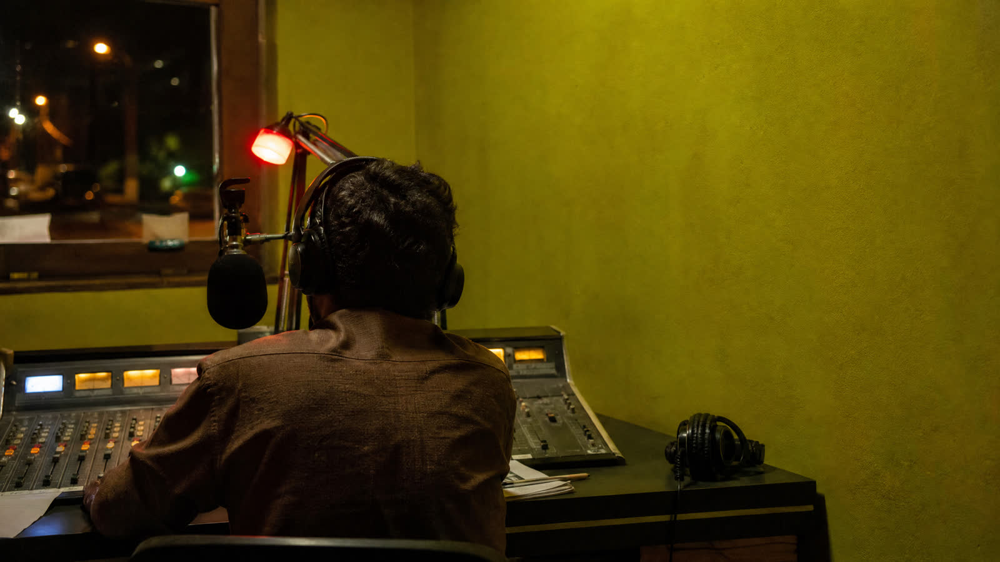
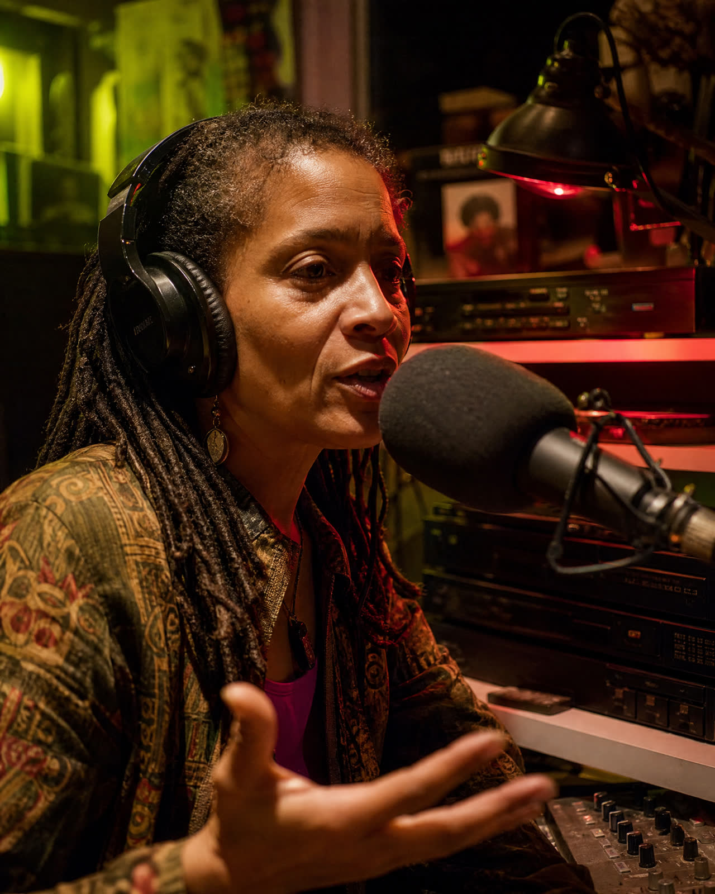

06:00
First Coffee
A gentle start with local news and songs that know the way.
M — F / live
Local voices, strange records and the long way home. Broadcasting from one small room since 2019.

LOOP is a neighborhood radio station built around the people who live, make and move here.
We play music with fingerprints on it, invite the interesting ones into the booth and leave the door open for anyone with a good story.
A gentle start with local news and songs that know the way.
New releases, old favorites and one very good argument.
Conversations with the people changing the neighborhood.

Our studio sits above a bicycle shop on a noisy corner. It is not soundproof. It is not trying to be. The city gets in, and that is the point.
Send a voice note, a record recommendation or a reason we should meet you on air.
hello@loop994.fm →